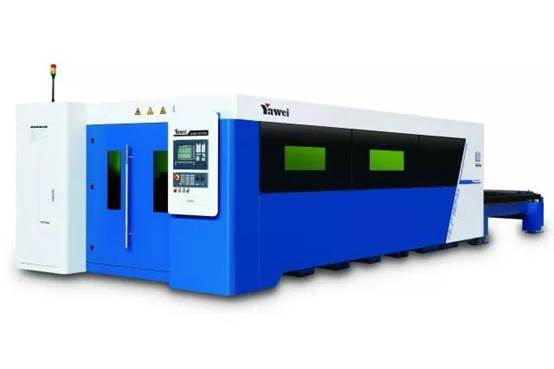
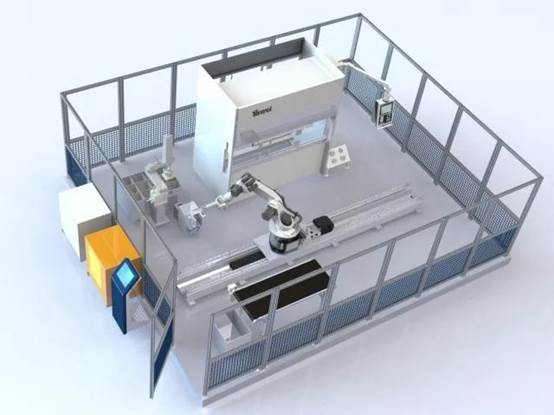
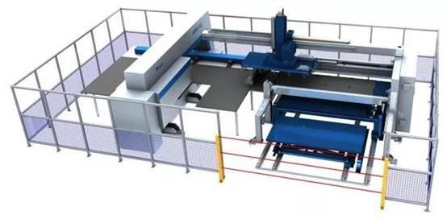
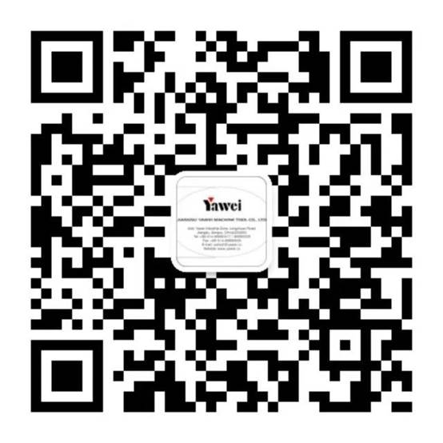
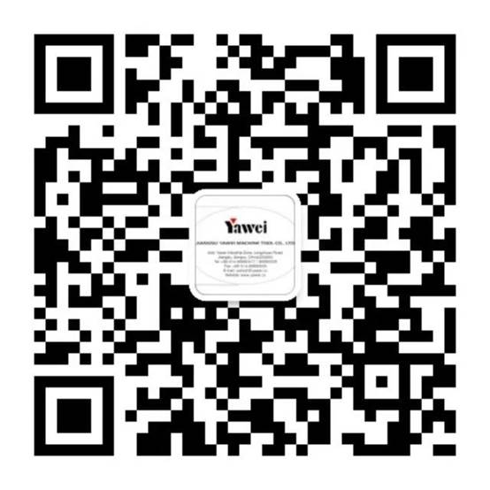

2017年11月江苏亚威展会快报
2017-10-21 亚威股份
关注我们
第19届中国国际工业博览会数控机床与金属加工展将在上海举行。本届展会围绕“创新、只能、绿色”主题，展现“中国制造2025”和“智能制造”带来的思想和制造方式的变革。届时，我们将携三款机型震撼亮相。亚威展台恭候您的莅临！

时间：11月7日-11月11日
地址：国家会展中心（上海）
展位号：2H F008
HLF-1530激光切割机

全新外观设计，性能大幅提升，比肩国际水平的新一代高速光纤激光切割机；
龙门双驱床身结构，高强度铝合金横梁，高效率自动交换工作台，生产能力倍增 ；
薄板超高速切割，中厚板高效率加工，金属材料加工广泛性更胜一筹；
尖端的激光技术和先进的数字控制技术深度融合，人性化操作界面与切割专家参数库全面升级。

小型折弯单元

PBE0102FMC0更加适合小型零件自动折弯需求，自动完成多种复杂零件加工，编程方便、操作快捷。
选择亚威，选择优质服务：
●亚威拥有多系列高精度折弯机，能够匹配高精度机器人，实现高精度机器人折弯单元
●亚威技术团队具有丰富的钣金制作经验，为您提供多种机器人折弯方案，满足您复杂产品、重型产品的加工需求
●小型板料自动折弯加工单元可轻松实现24小时不间断工作，节省人工，实现利润最大化。

AMS.H-30510数控板料冲压加工系统

先进的控制系统将各部分功能单元有效地融合到一起，使得板材加工的效率提升到新的高度。
其性能特点如下：
●减少生产成本，生产时间短，减少手动辅助操作和加工
●提高零件质量，零件精度高
●减少材料成本，高效套裁，增加板材利用率
●生产具有高灵活性和高自动化程度，上料机械手直接从上料台车上抓取板料用于与冲床对接。
 

长按识别二维码关注我们
阅读 1149
6投诉